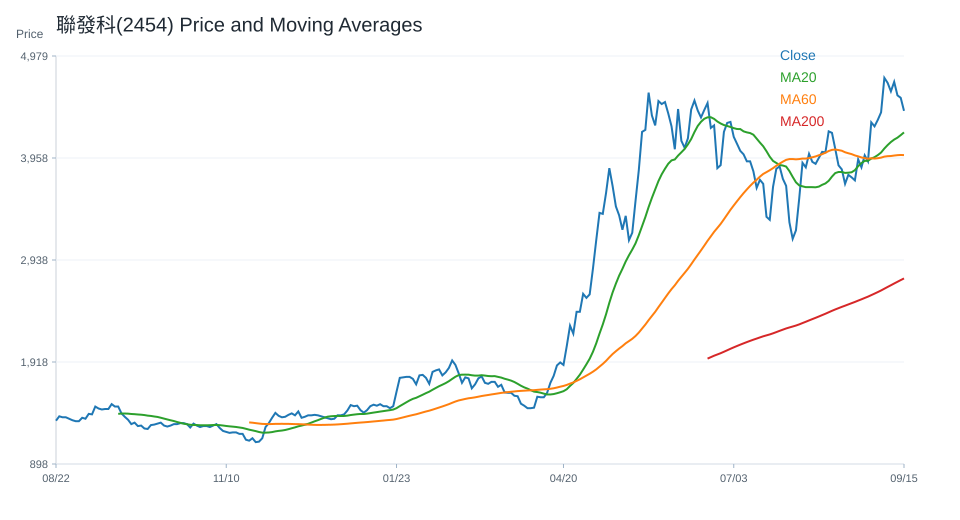
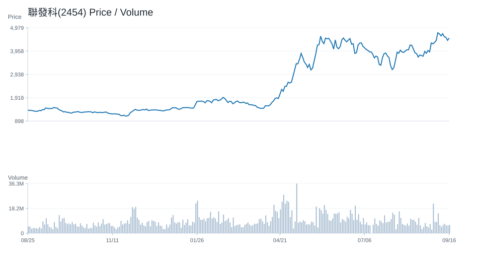
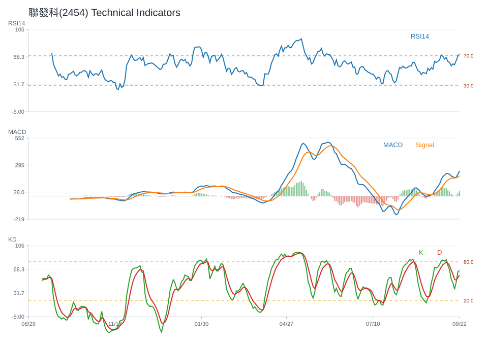
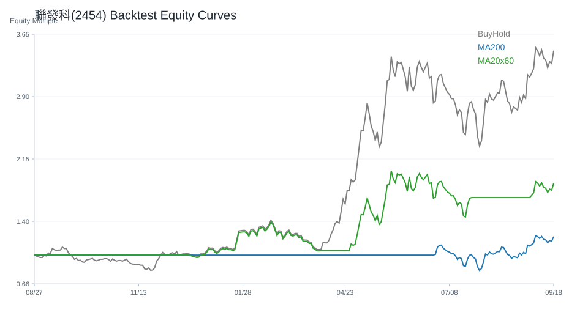

20 日
-10.73%60 日
146.60%觀察等級
維持觀察市場資料
2026-07-08- 成交量6,610,300.00
- 20 日均線4,247.75
- 60 日均線3,627.75
- 200 日均線2,127.25
- 距 52 週高點-13.90%
- 距 52 週低點248.91%
技術指標
Python 計算- RSI1446.45
- MACD hist-69.41
- KD K/D36.46 / 39.35
- ADX27.58
- 布林上緣4,643.32
- 布林下緣3,852.18
量價與事件
規則式分析- 量價型態量能中性
- 量價分數-1
- 20 日量比0.60
- OBV 20 日變化-5.60%
- 事件偏向事件偏多
- 事件分數3
研究訊號與觀察等級
不是買賣建議維持觀察；研究訊號 中性，分數 0。
正負條件尚未形成明確方向，維持一般追蹤。
- 20 日跌幅偏弱
- 60 日趨勢偏強
- 跌破 20 日均線
- 站上 200 日均線
- RSI 位於中性偏強區
- MACD histogram 為負
- KD 偏弱
- ADX 顯示趨勢強度較高
回測摘要
歷史資料研究| 策略 | CAGR | Sharpe | 最大回撤 | 勝率 | 交易次數 |
|---|---|---|---|---|---|
| 價格高於 200 日均線 | 43.31% | 1.16 | -34.72% | 49.40% | 14 |
| 20/60 日均線交叉 | 17.91% | 0.66 | -37.76% | 47.23% | 10 |
| 買進持有 | 60.67% | 1.32 | -35.81% | 50.32% | 1 |
圖表
價格 / 量價 / 技術 / 回測聯發科(2454) 價格均線

聯發科(2454) 量價關係

聯發科(2454) 技術指標

聯發科(2454) 回測
